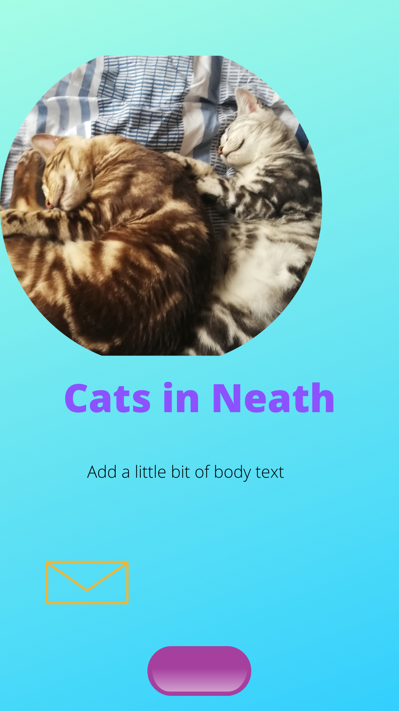
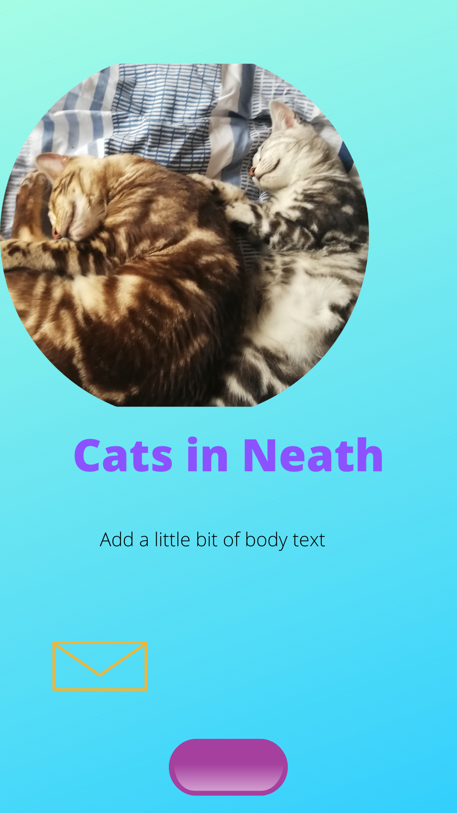
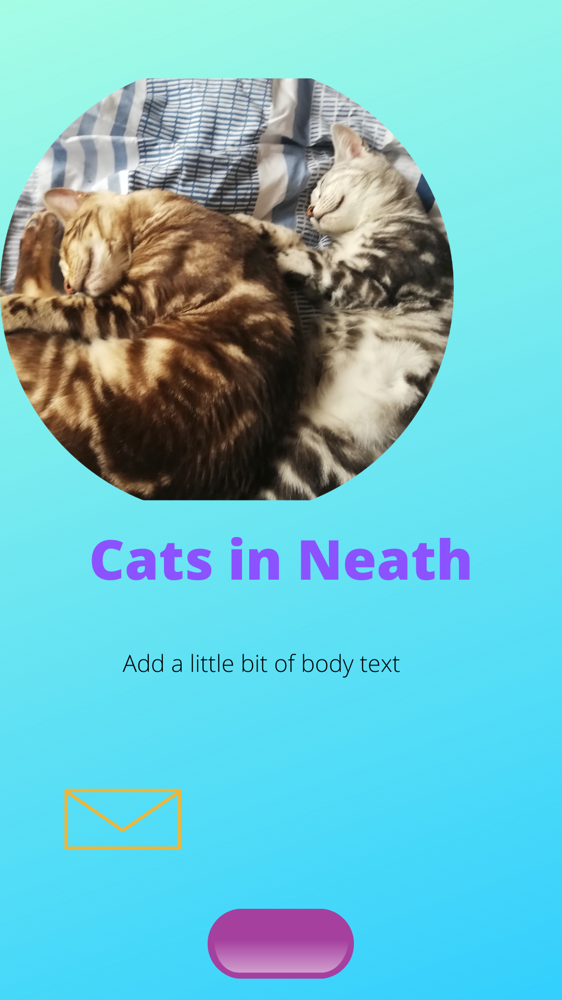

Building a site centred around cats was not what I was going to do initially. In fact , I was actually planning to build a site focused on German horror. Not only because the topic interested me on a personal level, but because I wanted to get others interested in the subject as well.
However, after spending some time on doing research, I realised two things: German horror is a very niche topic that would not necessarily be very fun to design, especially because of the limited content.
Furthermore, it would have placed a huge emphasis on research, and I wanted to have free reign over the content of my page without having to worry about spending too much effort on the actual process of writing it. It just did not seem like the effort would pay off in the long run.
So, in the end, I decided to build a website about cats - how to take care of them, how to prepare to welcome a new kitten home and other such topics. The site is structured in two parts: relevant articles and more static content, like the contact page and the page leading to the AdoptCat app which I wrote throughout my deep dive into the world of web development.
To be honest, what inspired me to build a website about cats is the fact that I am a cat owner myself. In addition to that, I am also an animal lover who advocates for fair treatment of pets. As such, I feel strongly about ensuring the welfare and safety of animals.
The other reason why I chose to focus on cats is because I feel that they have a bit of an unfair reputation as being aloof and uncaring. Not only is that stereotype untrue, but I also think it leads potential cat buyers to believe that you can get away with treating a cat less lovingly than a dog. Indeed, cats need just as much attention as our canine friends.
Another main factor in building a website about cats is that I could focus on the front end development without too much of a hassle. Not only do I have a lot of images of my own cats, but I also have a fair amount of knowledge when it comes to felines.
I would say that my implementation of accessibility is subtle, but present in important ways. One of the ways in which I ensured that the site would be accessible is by making sure that the user could make the text bigger or smaller depending on their needs. This helps make the site usable to people who have poor eyesight - like myself, in fact!
Another way I tried to make the site accessible is by making sure that there was always an option to return to the index page - either by using the navigation bar or clicking on the button that redirects to the ‘Cats in Neath’ page. The navigation bar turns into a dropdown when the site is minimised.
Another way in which the site is accessible is that the colour coordination/scheme of the layout is not trying to be too invasive. I avoid using fonts that are hard to read or have background colours that would make the actual content page of the page invisible. I also avoided adding too many images on the site, preferring to keep it easy on the eyes.
Some of the usability features easily tie in with the accessibility ones, but it is important to point out that the website is not trying to be more than what it is. The content and the images represent the purpose of the site -- namely to be a site focused on cats with various articles being featured to help potential cat owners make important decisions.
I avoided adding too many gimmicks to the site - namely animations or videos. I wanted the site to be accessible to as many people as possible, which is why I thought simplicity was paramount. As such, I tried to keep the language simple but without dumbing it down. My assumption is that people in Neath are going to be native speakers and, as such, capable of dealing with a more or less conversational writing style.
Most importantly, I wanted to build a website that was nice to look at and that users would find charming enough to revisit in the future. That is why I tried to include friendly colours, cute emoticons and nice images that would inform the users of how adorable cats are.
Prior to doing this course, I was a complete novice in CSS and Javascript. In fact, the only HTML I knew was the one that I used in order to make a text bold or italic. I never needed or wanted to learn more; however, throughout the duration of this course as well as the process of building this website, I found myself not only learning to appreciate the techniques that came with front end development but also had fun doing so.
One of the first things I learnt was how to use CSS to format my site in a specific way. Not only that but I took advantage of the various frameworks out there, so that I could build upon my already existing skills. I may not have used everything I found, but it was beneficial for me to still come across these various libraries and resources. I especially appreciate how many resources there are out there for fonts.
Another thing I learnt was to use tutorials and online platforms to my advantage; I did not merely copy or try to imitate what the online tutorials taught but enhanced my code to suit my needs. This may not have been the best approach to learning how to do web developments as client requirements are there for a reason; however, I wanted the site to look in a specific way and did not fully agree with what the tutorials were producing.
I think I picked up on HTML and CSS quite well, using the latter to make the site look like I wanted it to. I did not fall into the trap of overusing Bootstrap or Handlebars but used them as important resources to further make the website do what I wanted it to do.
I would like to think that this site is original in terms of appearance. I am proud of the fact that I was able to use a lot of my own images and that the text content on these pages is my own. One of the things I wanted to avoid is building a site that looked like any other on the web.
I also kept refactoring the web site, even at the time of writing this, because I never believe that something is truly finished, especially a website. My plan is to keep working on this website even after finishing this module.
Of course, the limitations of being a student as well as having no prior front end development experience means that a lot of the site features were being built while I was still actively learning how to do things. As such, I probably did not use the full capacity of Bootstrap, especially in terms of its grid layout or utilise Javascript as much as I could have; however, I wanted to build as much as I could on my own without overreliance on too many other sources. Even if I did reuse something, I always tried to add my own spin onto things.
This site is also a work in progress in the sense that I may come and revisit it in the future to add more features and content. Consequently, some refactoring is probably going to continue, because nothing is ever truly perfect, and I will probably always find something to tinker with.
I will admit that I did not spend much time on wireframes because sources like Figma were mostly unusable for me. It cost me too much frustration, which is why I resorted to hand drawn papers or Paint. This was enough for my needs as I tend to think visually and do not require that much in terms of visual representation; however, I understand why this would be counterintuitive if I ever had to design something for a third party.
Some of the most important resources are listed below, and I have ensured to add comments as to where they have been used throughout the project. I built two pages for this site directly while doing online courses and also created some precursor sites to this one that helped me tackle concepts such as CSS, Bootstrap and website design (as well as colour theory). The sites below were built using a Udemy course. The last listed site is the abandoned German horror zone.

I always had a simple layout in mind; therefore, my wireframes follow a similar structure and were created in PowerPaint, because that was the easiest tool to use. The same can be said for the mockups, where my focus was mostly making sure that the buttons got a bit smaller when the screen width grew bigger and adjusting the layout (for reasons of versatility). The mockups were used to help me with the decision making throughout the process of building the site.
I used online resources to help me with the responsive design of the site (which are listed in under resources.md). Moreover, I also used an online generator to help me with the creation of the site map that I have attached to this project. The wireframes, mockups and sitemap can be found in their respective folders.
[1] Dr. Angela. Yu, 'The Complete 2020 Web Development Bootcamp', 2020. [Online]. Available: https://www.udemy.com/course/the-complete-web-development-bootcamp/?referralCode=F2958B9D9447BDFC8244. [Accessed: 23- Aug- 2020]
[2] Code Institute, '5 Day Coding Challenge', 2020. [Online]. Available: https://codeinstitute.net/5-day-coding-challenge/.[Accessed: 28-Aug-2020]
[3] Handlebarsjs.com, 'Handlebars Installation', 2020. [Online]. Available: https://handlebarsjs.com/installation/. [Accessed: 23-Aug-2020].
[4] W3Schools, 'Javascript Font Style Property', 2020. [Online]. Available: https://www.w3schools.com/jsref/prop_style_fontsize.asp. [Accessed: 23-August-2020]
[5] W3Schools, 'Javascript Form Validation', 2020. [Online]. Available: https://www.w3schools.com/js/js_validation.asp. [Accessed: 23-August-2020]
[6] StackOverFlow, 'Return to Index', 2013. [Online]. Available: https://stackoverflow.com/questions/13158786/how-to-return-to-home-page-using-javascript/13158910. [Accessed: 23-August-2020]
[7] W3 Schools, 'How to Create A Custom Scrollbar', 2020. [Online]. Available: https://www.w3schools.com/howto/howto_css_custom_scrollbar.asp. [Accessed: 23-August-2020]
[8] CodePen, 'Gradient Buttons', 2020. [Online]. Available: https://codepen.io/pirrera/pen/bqVeGx [Accessed: 23-August-2020]
[9] Color Hunt, "Color Hunt', 2020. [Online]. Available: https://colorhunt.co/ [Accessed: 23-August-2020]
[10] Bootstrap, 'Get Bootstrap', 2020. [Online]. Available: https://getbootstrap.com/. [Accessed: 23-August-2020]
[11] Sitemap generator, ‘Sitemap Generator’, 2020. [Online]. Available: https://www.xml-sitemaps.com/. [Accessed: 30-August-2020]
[12] AMI, ‘Am I responsive?’, 2020. [Online]. Available: http://ami.responsivedesign.is/. [Accessed: 30-August-2020]
[13] Canva, ‘Canva’, 2020. Online]. Available: https://www.canva.com. [Accessed: 30-August-2020]